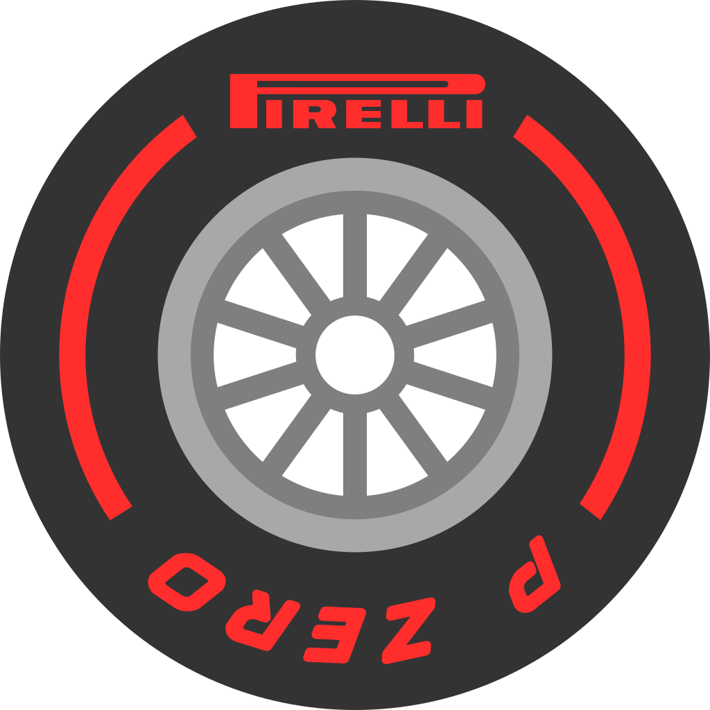

I’m a B.Sc. Computer Science student with a strong interest in technology, data, motorsports, and cybersecurity. My long-term goal is to become a Telemetry Data Analyst in motorsports, combining my passion for racing with data analysis, programming, and problem-solving[span_1](start_span)[span_1](end_span).
I enjoy coding and building games and applications, while developing my skills in Python, C++, C, SQL, AWS, and HTML. I’m also exploring cybersecurity, with an interest in systems, networks, and data protection. Outside academics, I’m passionate about motorsports and the technology behind racing[span_2](start_span)[span_2](end_span).
Assisted developers by identifying, reproducing, and documenting complex bugs and physics engine glitches. Executed test cases in multiplayer server environments to ensure stability and quality of new builds and updates[span_4](start_span)[span_4](end_span).
B.Sc. Computer Science. Relevant Coursework: Problem Solving using C, Data Structures and Algorithms, Programming and Problem Solving, Computer Science Fundamentals[span_6](start_span)[span_6](end_span).
12th Standard: 86% Total, with a perfect score of 100 in Computer Science. 10th Standard: 93% Total[span_8](start_span)[span_8](end_span).
Studied the application of the Jacobian matrix in robotics. Explored a two-link robotic arm and applications such as bottle picking. Covered velocity calculation, trajectory planning, robot control, and singularity analysis[span_10](start_span)[span_10](end_span).
Extracting and analyzing fastF1 telemetry data using Python and Pandas to visualize cornering speeds, throttle application, and tire degradation trends across different circuits to simulate real-world race engineering decisions[span_11](start_span)[span_11](end_span).
Designed and deployed an interactive application project hosted on GitHub Pages, featuring interactive UI layouts and real-time playback controls[span_12](start_span)[span_12](end_span).
Designed a motorsport-themed personal portfolio website exploring the relationship between programming, telemetry metrics, and vehicle dynamics[span_13](start_span)[span_13](end_span).
Direct emulation of the C program modules including structure storage, attendance computation, and rank calculation[span_14](start_span)[span_14](end_span)[span_15](start_span)[span_15](end_span).
